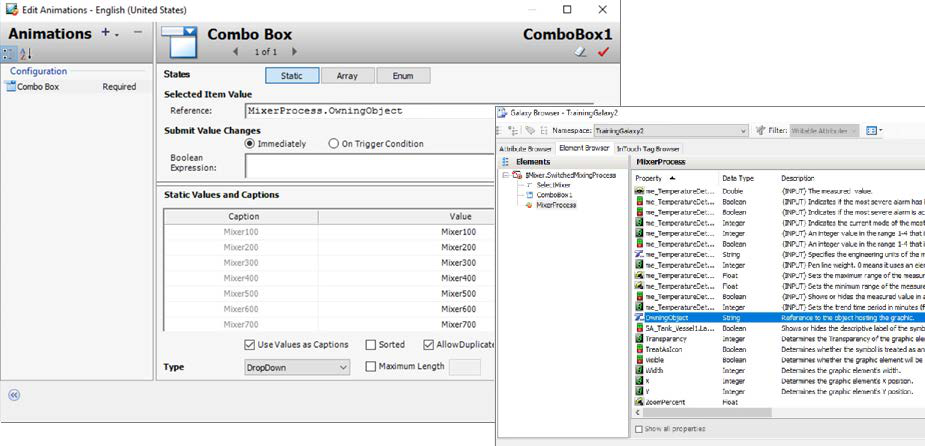
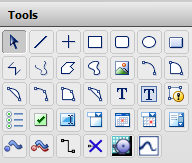
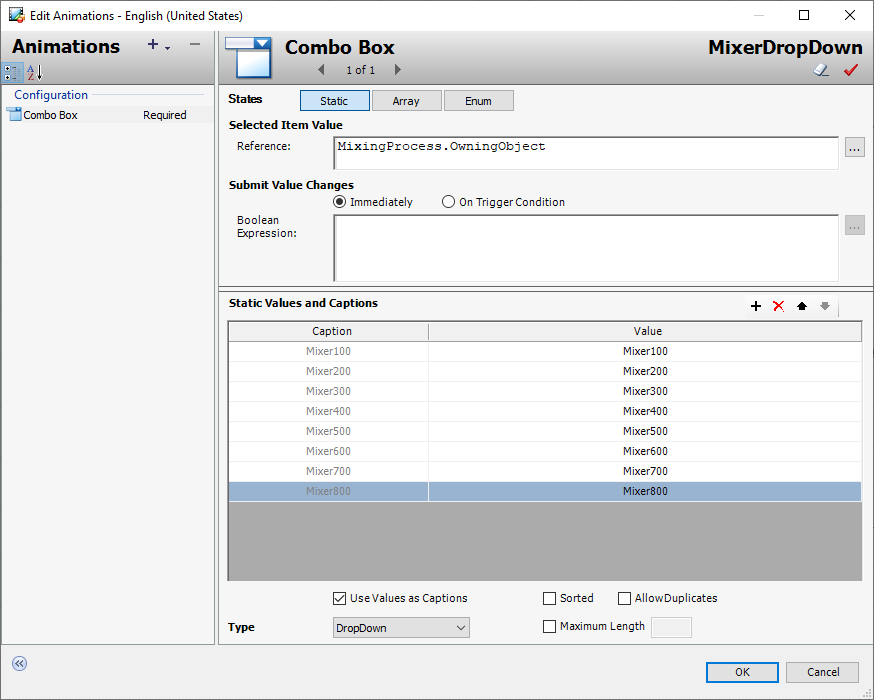

Creating the Mixer Display 3-83
Module 3 — Symbols | Pages 181–204





Do Not Copy Lab 7 – Creating the Mixer Display 3-83 AVEVA™ InTouch for System Platform 2023 5. In Content, click the Edit Content button to open the Graphic Editor. Note: You can also double-click MixingProcess_Detailed in the Content pane to open the Graphic Editor. You will now embed symbols from contained objects through relative references. 6. Right-click the canvas and select Embed Industrial Graphic. 7. In the Galaxy Browser, click the Relative References button, and then embed Me.Pump1\Pump_Detailed.
Do Not Copy 3-84 Module 3 – Symbols AVEVA™ Training 8. Place the graphic on the canvas as shown below: Leave space at the top-left of the canvas for text that you will add later in this lab. 9. Use the Galaxy Browser to embed Me.Pump2\Pump_Detailed on the canvas below the first pump as shown below:
Do Not Copy Lab 7 – Creating the Mixer Display 3-85 AVEVA™ InTouch for System Platform 2023 10. Embed the following symbols on the canvas, using the screen shot below as a guide. Relative Reference Symbol Name Me.Inlet1 Valve_Detailed Me.Inlet2 Valve_Detailed Me.Outlet Valve_Detailed Me.Agitator Agitator_Detailed Me.Level Level_Detailed Me.Temperature Temperature_Detailed
Do Not Copy 3-86 Module 3 – Symbols AVEVA™ Training 11. On the Toolbox tab, search for sa_tank, and then drag SA_Tank_Vessel to the canvas. 12. Move and resize SA_Tank_Vessel on the canvas to cover the Agitator, Level, and Temperature graphics.
Do Not Copy Lab 7 – Creating the Mixer Display 3-87 AVEVA™ InTouch for System Platform 2023 13. On the Properties tab, configure SA_Tank_Vessel as follows: 14. Right-click Tank and select Substitute | Substitute Strings. 15. Change Label to Mixer. 16. Click OK to close Substitute Strings. The label changes to Mixer. Name: Tank QualityStatusIndicator: False
Do Not Copy 3-88 Module 3 – Symbols AVEVA™ Training 17. With Tank selected, right-click and select Order | Send To Back. The order of the elements is updated and displayed in Elements.
Do Not Copy Lab 7 – Creating the Mixer Display 3-89 AVEVA™ InTouch for System Platform 2023 Add Connection Points and Draw Connectors Between Graphics Next, you will add connection points to the Tank, and then draw connectors between the graphics to represent piping. You will use the Connection Point element and the Connector element from the Tools pane. 18. On the toolbar at the top, click the Canvas Zoom drop-down list, and select Fit. 19. Click Snap to Grid to turn off the snap to grid feature. 20. In Tools, double-click Connection Point. The cursor changes to a cross hair cursor. Note: Double-clicking a tool saves time by not requiring you to reselect the tool when using it to draw multiple elements of the same type on the canvas one after the other. Clicking another tool or pressing the Esc key will cancel the operation.
Do Not Copy 3-90 Module 3 – Symbols AVEVA™ Training 21. Move the cursor to the left-side border of the tank and align the cursor with the built-in connection point on the right side of the Inlet1 graphic. The tank border turns green when the connection point cursor hovers over it. 22. Click to place the Connection Point element on the border of the tank. 23. Add a second Connection Point element to the left side border of the tank, aligned with the built-in connection point on the right side of the Inlet2 graphic.
Do Not Copy Lab 7 – Creating the Mixer Display 3-91 AVEVA™ InTouch for System Platform 2023 The second connection point is added to the left-side border of the tank. Next, you will add connectors. 24. In Tools, double-click Connector. 25. Hover over the bottom-center of the Tank until the connection point appears, then click and drag the connector to the connection point on the left side of the Outlet valve.
Do Not Copy 3-92 Module 3 – Symbols AVEVA™ Training 26. Hover over the connection point on the right side of Pump1, and then drag the connector to the connection point on the left side of Valve1. 27. Create a connector between Valve1 and the adjacent connection point on the Tank.
Do Not Copy Lab 7 – Creating the Mixer Display 3-93 AVEVA™ InTouch for System Platform 2023 28. Add connectors between Pump2, Inlet2, and Tank as shown below: 29. In Tools, click Pointer. Note: Clicking the Pointer cancels the connector drawing operation.
Do Not Copy 3-94 Module 3 – Symbols AVEVA™ Training 30. In Elements, press the Ctrl key and select the following elements: Connector5 Connector4 Connector3 Connector2 31. On the Properties tab, in the ConnectionType drop-down list, select Straight. The bends in the selected connectors are removed. However, the valves and pumps may not be aligned. You will do this next.
Do Not Copy Lab 7 – Creating the Mixer Display 3-95 AVEVA™ InTouch for System Platform 2023 32. On the canvas, select Pump1, press and hold the Shift key down, and then select Pump2 to add it to the selection. Both pumps are now selected. 33. With both pumps selected, use the up or down arrow keys on the keyboard to straighten the connectors between pumps and valves. If necessary, make other adjustments to the valves to ensure all the connectors are straight.
Do Not Copy 3-96 Module 3 – Symbols AVEVA™ Training Add Text to Display Object Name and Area Name Now, you will add text elements to display the mixer name and area information. Then you will apply Element Styles and Value Display animations to these text elements. 34. In Tools, click Text. 35. Click at the top-left of the canvas. 36. Type Object Name and press Enter, and then type Area Name.
Do Not Copy Lab 7 – Creating the Mixer Display 3-97 AVEVA™ InTouch for System Platform 2023 37. Click the canvas to cancel creating more text elements. The text elements should look similar to the following: 38. Select the Object Name text, and on the Properties tab, name the element ObjectName. 39. On the Properties tab, in the ElementStyle drop-down search field, enter title and select Title.
Do Not Copy 3-98 Module 3 – Symbols AVEVA™ Training 40. On the canvas, select the Area Name text and configure properties as follows: 41. Move the Area Name text down a little. In the following steps, you will add animations to your text. 42. On the canvas, double-click ObjectName. Edit Animations appears. 43. Click the Add Animation button. Name: AreaName ElementStyle: Heading
Do Not Copy Lab 7 – Creating the Mixer Display 3-99 AVEVA™ InTouch for System Platform 2023 44. Select the Value Display animation. 45. Configure the animation as follows: 46. Click OK to close Edit Animations. The text element is updated. States: Name Name to be displayed: Tag Name (default)
Do Not Copy 3-100 Module 3 – Symbols AVEVA™ Training 47. On the canvas, double-click AreaName. 48. Add a Value Display animation. 49. In States, click String. 50. In Expression Or Reference, in the String field, enter Me.Area. 51. Click OK to close Edit Animations. 52. On the toolbar at the top, click Snap to Grid to enable the feature. 53. On the toolbar at the top, click Zoom to Normal. The elements on the canvas are resized.
Do Not Copy Lab 7 – Creating the Mixer Display 3-101 AVEVA™ InTouch for System Platform 2023 54. Click the canvas to set focus on the canvas. 55. On the Properties tab, change the Size property to Fixed. 56. Adjust the canvas size to fit all elements, leaving some white space around the edges. 57. Save and close the MixingProcess_Detailed graphic. 58. Save and close the $Mixer object and check it in.
Do Not Copy 3-102 Module 3 – Symbols AVEVA™ Training Replace Level Graphic with MixingProcess Graphic in ContentDisplay Window In the following steps, you will replace the Level_Detailed graphic in the ContentDisplay window with the MixingProcess_Detailed graphic you just created. 59. Switch to WindowMaker. 60. Right-click the ContentDisplay window and select Embed Industrial Graphic. 61. In the Galaxy Browser, click the Instances button, and then select Mixer100\MixingProcess_Detailed. 62. Click OK. A WindowMaker message appears, prompting you to confirm the replacement. This is because frame windows can only host one embedded symbol.
Do Not Copy Lab 7 – Creating the Mixer Display 3-103 AVEVA™ InTouch for System Platform 2023 63. Click Yes to replace Level_001.Level_Detailed. The graphic is replaced. Test in Runtime Finally, you will view the MixingProcess_Detailed graphic in runtime. 64. Click Runtime. The MixingProcess_Detailed graphic appears in the ContentDisplay window.
65. Click Development! to return to WindowMaker.
Do Not Copy 3-104 Module 3 – Symbols AVEVA™ Training
Do Not Copy Section 5 – The OwningObject Property 3-105 AVEVA™ InTouch for System Platform 2023 Section 5 – The OwningObject Property OwningObject Property OwningObject is a runtime property used to dynamically change the references within a graphic from one instance to another. It can be used as the object reference to replace all “Me.” references in expressions and scripts. The object name can be set using the tagname or the hierarchical name of an automation object. Windows Common Controls You can add the following Windows common controls to your graphic: Radio button group Check box Edit box Combo box Calendar control DateTime picker List box You can place these Windows common controls as you would any other element by selecting them from the Tools pane. You click on the canvas to position a common control and, with exception of the calendar control, drag the rectangle to set the control. After placing the control on the canvas, you can configure: Background color and text color (with exception of the DateTime Picker control). Other control-specific properties Control-specific animations This section introduces the OwningObject property and Windows common controls.
Do Not Copy 3-106 Module 3 – Symbols AVEVA™ Training Combo Box Control and Combo Box Animation Combo Box controls allow users to select from a foldable list. You can configure a Combo Box element with a Combo Box animation. The Combo Box animation is only used by the Combo Box element. Combo Box types include: Simple: At runtime, users can type a value or select one using up and down arrow buttons. DropDown: At runtime, users can type a value or select one from the list DropDownList: At runtime, users can only select a value from the list. They cannot type one. You can use the Static Values and Captions list to define values for the drop-down list. You can also use properties that are specific to the Combo Box control in scripting. At runtime, you can access the script to view and modify the items in the Combo Box Control. Some Combo Box-specific properties available at runtime include: Count: Returns the number of items in a Combo Box control NewIndex: Returns the index of the last item added to the Combo Box list These properties are available when you browse for a Combo Box control in your HMI's attribute/ tag browser.
Review the sections above for the main topics, step-by-step procedures, and important configuration details.
This is part of the InTouch HMI layer, which integrates with Application Server's Galaxy for a complete visualization solution.
Module 3 — Symbols. AVEVA InTouch for System Platform 2023 Training.
Next: Lesson L17 — The OwningObject Property + Lab 8